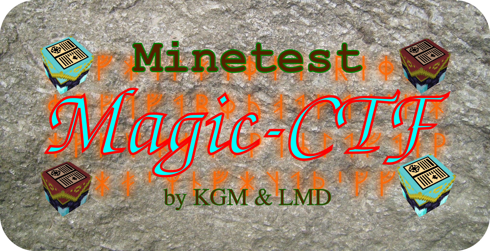

About Magic-CTF
Aim
Magic-CTF is a new CTF Game for Minetest. It is an important goal to have a strong magical component.
Therefore, the game tries to look & feel somehow magical-medieval - accordingly, the HUD has been altered.
Other than rubenwardy's CTF, it doesnt focus on removing stuff to keep the game focused, but instead aims at adding even more.
That should lead to a more interesting gameplay. Players should be encouraged to develop their own strategies.
The long-term goal is to make Magic-CTF the best & most popular server game for Minetest.
Website Guide
It is strongly recommended to take a look at the Content of Magic-CTF. Also, please visit Credits, to get to know all the other contributors besides LMD and KGM whose contributions made this game possible. If you finally decide to give it a try on your server, go to the Releases.
References
Website
Generated by an improved version of md-pypage. Website & md-pypage 100 % by LMD.
Logo

Magic-CTF Logo
Setup
For information on how to run a server or install a subgame, please visit Minetest Forum : Setting up, running, and maintaining a server
Go to the release section to download the Magic-CTF Minetest Subgame.
You can additionaly also get the High Contrast Texture Pack.
Required Minetest Version
Magic-CTF was developed & tested on Minetest 0.4.17.1, but should be compatible with 0.4.16.x as well, because 4.17 is said to be a bugfix-only release. It is most likely also usable on MT > 0.4.13.
It has several incompatibilities with 5.0.0, due to player position change.
Todos
Mentioned in "Content" section.
Magic-CTF is a new, magically themed CTF Engine & Game for Minetest Servers.
Minetest is a free software game engine currently under development to create various games based on voxel gameplay, inspired by InfiniMiner, Minecraft, and the like. Minetest was originally created by Perttu Ahola (alias “celeron55”).
Page generated by md-pypage.